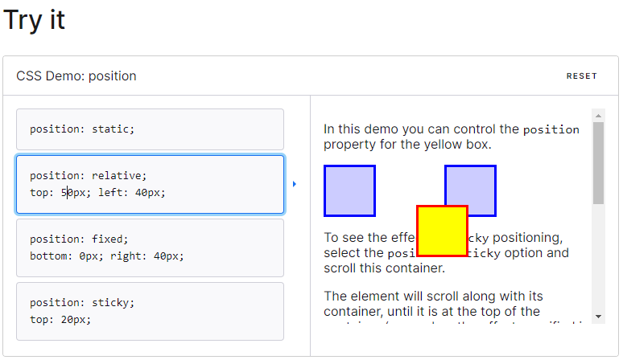
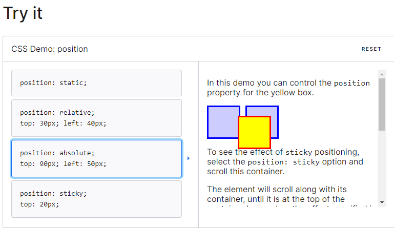
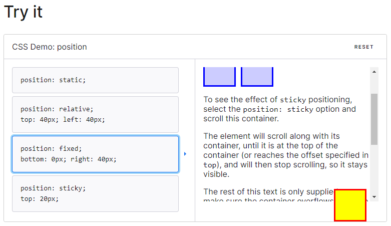

What is the position property?
The CSS position property helps to position elements within your document. There are different position values that you can use but today we are going to focus on:
- Static
- Relative
- Absolute
- Fixed
postion:static;.
Static positioned elements (aka default elements) are not affected by top/bottom/right/left properties and are positioned according the the
flow of the page. So how do we move things out of the normal flow? Lets find out!
position: relative;
Its time for relative positioning.... but relative to what? Turns out this property means it is relative to its normal position.
This position is almost exactly like position:static; except you can specify values for top/bottom/left/right. By specifying
those values you can adjsut away from the normal position of the element. However, keep in mind this will not move any other elements
to accomadate the change- so you may find that you have gaps or even cover other elements.

position: absolute;
Are you absolutely sure where you want an element? With position: absolute;you can remove an element from
the normal document flow and place an element anywhere on the page by specifying a top/bottom/right/left value. The
rest of the page will render as though the element is not there at all.
Its important to note that in order to apply position: absolute; to a child element the parent element must have
position: relative

position: fixed;
position:fixed; positions your element relative to the viewport (aka screen). This means that even when you scroll on a page
the element will stay in the same place regardless of the position of the parent element. Like our other elements you can use top,
bottom, right, or left to poistion it. A fixed element is removed from the flow of the document and does not leave a space where it would normally
have been located.

Wanna try it yourself? The examples I showed above came from mdn web docs and you can try it here